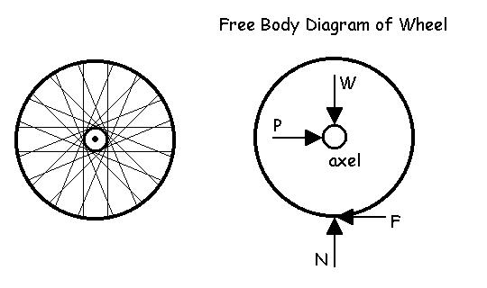
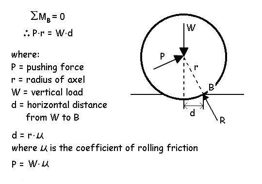
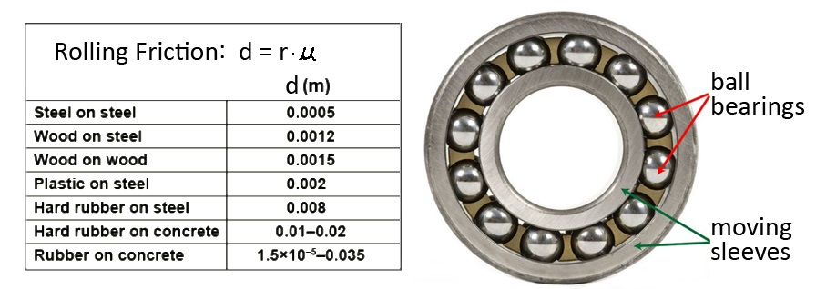
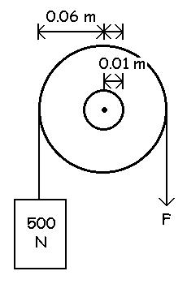
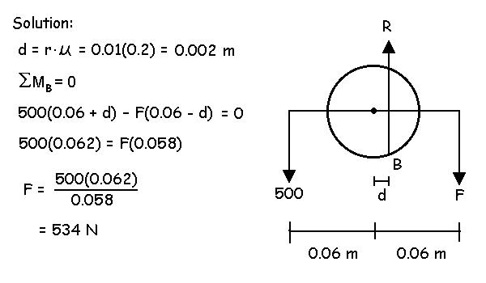

Friction
Rolling Friction:
In biomechanics, we often deal with rolling objects such as bicycle wheels and pulleys in weight machines. As with dry friction, rolling friction opposes motion and can be an important external force. In the case of the wheel pictured below, if we consider it to be rolling at a constant velocity, the sum of the forces must be zero. This means that the weight (W) must be equal to the normal force (N) and if friction exists between the road and the wheel (F), there must be an equal pushing force (P) to keep the wheel moving forward at a constant velocity. If there is no friction (F=0), there is no need for a pushing force and the wheel slides without even turning.

Notice that the forces W, P, and N go through the axle but F does not. For the sum of the moments to be zero, there must be an additional moment to keep the wheel rolling. If there is no axle friction, then the friction force F is zero because the wheel will freely rotate and P is no longer needed. Therefore, it is the axle friction that we need to calculate.
Like dry friction, rolling friction also depends on the amount of loading (W). Perhaps the easiest way to understand rolling friction is imagine a deformation of the circle as it is loaded. In the diagram below, this is shown as a wheel sinking into the ground. The reaction force (R) acts at point B against the vertical load (W) and the pushing force (P).

The moment equation above indicates that the rolling friction produces a moment that opposes rotation. The moment is due to the weight or normal force multiplied by a moment arm (d) which is dependent on the radius of the wheel or axle and the coefficient of friction. The table below shows some typical values of "d" for different contacting materials. Notice that rubber on concrete has a much higher value of "d" than steel on steel. A bicycle tire deforms more than steel when loaded and will deform even more if not fully inflated. This will cause greater rolling friction and it is why many wheels use ball bearings (steel on steel) to minimize the rolling friction in the axle.

Example: What is the pushing force required to overcome rolling friction of a bicycle that has two wheels of 0.37m radius, a weight of 700 N (rider + bike) and a value of d = 0.035 for rubber on concrete. Assume that the axle friction is negligible.
Solution: Each wheel has a weight of 350 N (700/2 = 250) and d = 0.035. Therefore the moment of force due to rolling friction is 350(0.035) = 12.25 N.m. Since the radius of the wheel is 0.37 m, the pushing force is P(0.37) = 12.25; so P = 12.25/0.37 = 33.1 N. Since there are two wheels, the total pushing force is 33.1(2) = 66.2 N.
Notice that a larger diameter wheel would require less pushing as would a lower value of "d" (harder tires).
Also, notice that the number of wheels does not influence the rolling friction. In this case, we calculated the rolling friction of each wheel and then multiplied by the number of wheels (2 in this case). However, we divided the weight by the number of wheels which was also two. Since we divide W by the number of wheels and then multiply the friction by the number of wheels, we would get the same result if we just considered one wheel with all of the weight. Therefore, large trucks with multiple wheels do not have additional rolling friction and it doesn't matter if the weight is not evenly distributed onto each wheel (assuming each wheel has the same radius and coefficient of rolling friction).
Another way to look at rolling friction is to use the lever method to determine the moment of force opposing rotation by rolling friction.
Example: How much force (F) is required to raise a 500 N weight using a pulley with a coefficient of rolling friction of 0.2?
Given:
radius of pulley = 0.06 m
radius of axle = 0.01 m
coefficient of rolling friction = 0.2

In this case, the moving parts causing the rolling friction are in the axle.
We use the radius of the axle and coefficient to find d.
Then we draw the lever and solve for the sum of the moments about B.
In this case, it requires 534N to raise a 500N mass
How much force would be required to lower the mass? How could this experiment be used to determine the coefficient of rolling friction?